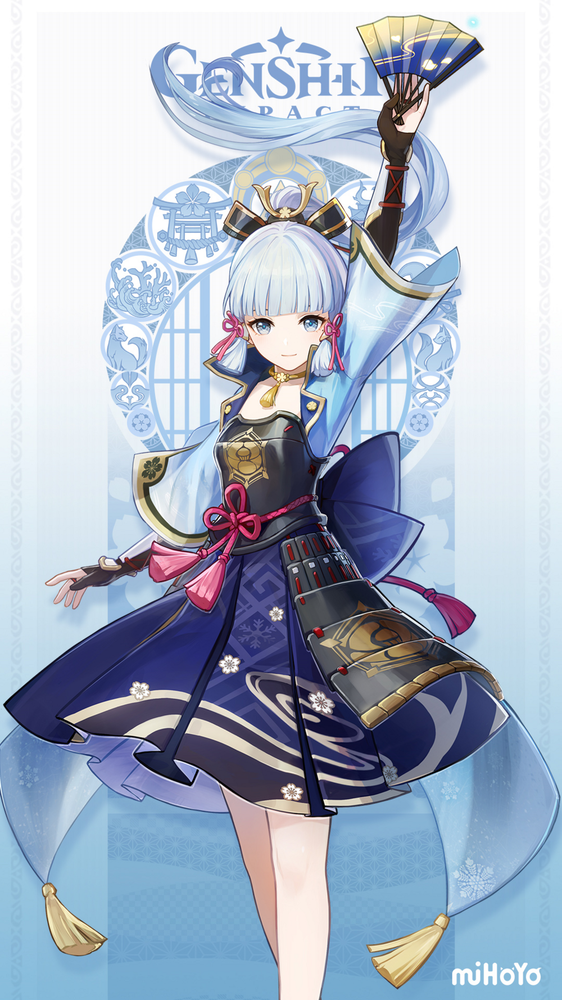

Kamisato Ayaka (en japonés: 神 里 綾 華) es un personaje jugable en Genshin Impact. Ella es la hija mayor del Clan Kamisato y hermana de Kamisato Ayato. Siendo hermosa, elegante y graciosa, la gente común no tiene nada de qué hablar mal de Kamisato Ayaka. Debido a su estatus social como la hija mayor del Clan Kamisato de la Comisión Yashiro y como la Princesa Garza, Kamisato Ayaka es vista como un modelo de perfección. Estuvo disponible por primera vez durante la primera prueba beta cerrada. Llegó por primera vez (públicamente) en la versión 2.0 en el gachapón "Elegancia de la garza". Es una de las mejores Cryo waifus,mucho antes de que saliera su banner era esperada siendo uno de los mejores DP´s del juego eso la hace aun mas querida, sin enbargo lo unico malo es su dash
Kamisato Ayaka es una chica de estatura ligeramente inferior a la media. Mantiene su largo cabello azul blanco atado en una coleta alta con un tocado blindado. Su flequillo es de corte recto, con dos mechones frontales de su cabello a los lados separados por nudos de flores rosas de 3 pétalos. Sus ojos de color gris azulado claro están acompañados de pestañas gruesas y un lunar debajo de su ojo izquierdo.
Viste una falda plateada azul real con una variedad de patrones hasta las rodillas, con detalles en oro y pequeños patrones de flores blancas. Tiene una coraza negra con un escudo dorado en el centro y placas de armadura a juego en los lados de su falda. Debajo de su peto hay una camisa holgada hasta los codos con degradados de azul a blanco. Sus puños y cuello en la parte superior son azul marino con una variedad de rayas doradas. Lleva mangas negras debajo de la camisa suelta que se cuelga sobre sus dedos medios y cubre ambos pulgares. Encima de sus mangas negras hay enchapados blindados blancos forrados con metal dorado, unidos por nudos rojos.
En la parte posterior de su atuendo hay un gran lazo morado, atado por su Visión y otro nudo de flores rosadas. La mitad inferior de las cintas se oscurece con marcas doradas aparentemente nativas de su tierra natal.
Lleva sandalias geta negras con calcetines blancos hasta los tobillos decorados con lazos rosas en la parte posterior. Como accesorio, lleva un abanico dorado-azul marino a juego con su falda.
Kamisato Ayaka es una chica de buen corazón con un temperamento agradable que trata a los demás con cortesía y cortesía. Ella aprecia a la gente de Inazuma en su corazón y, a menudo, hace todo lo posible para ayudarlos personalmente en todo tipo de asuntos. Ella es una perfeccionista con una personalidad seria. La gente a menudo se conmueve por su dedicación, y sus allegados le otorgaron el título honorífico de "Princesa Garza". La gente del barrio siempre habla de ella con sincera admiración.
Ella es muy querida y muy popular de Inazuma, pero no tiene buenas habilidades sociables para hacer amistad con nadie. La gente de su ciudad natal quiere acercarse y hacerse amiga de ella, pero lamentablemente piensan demasiado que no encajarían en la presencia elegante de Kamisato Ayaka y que su conversación no iría bien.
Gracias a la influencia de la excelente educación de Kamisato Ayaka, su corazón es tan puro como el hielo cristalizado. Al igual que los espléndidos colores reflejados cuando los cristales de hielo giran en el aire invernal, así es el espíritu de Kamisato Ayaka. Ella no solo posee una gran belleza exterior y un comportamiento elegante, sino que también, que no es conocido por muchos, tiene un lado tierno y lindo.
Pero si desea capturar un corazón que cuelga en lo alto del cielo, debe tener la capacidad de trepar por las nubes. En otras palabras, Kamisato Ayaka está ansiosa por asociarse con personas capaces de lograr grandes hazañas; a sus ojos, las amistades las dicta el destino, de la misma manera que estaba destinada a blandir su espada cubierta de escarcha.